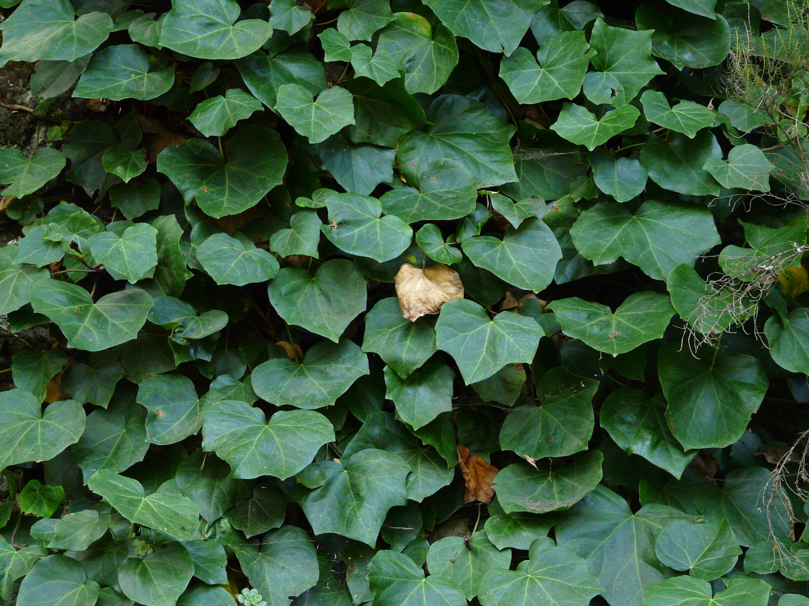

Ayuntamiento de Senés
JARDIN BOTANICO DE ESPECIES AUTOCTONAS DE SENES

Hedera helix

La hiedra (Hedera helix) es una planta trepadora perenne ampliamente distribuida en regiones templadas, incluyendo zonas mediterráneas. Se caracteriza por su capacidad para crecer adherida a muros, árboles y rocas mediante raíces adventicias.
Sus hojas son persistentes, de color verde intenso y con formas variables, mientras que sus tallos largos y flexibles le permiten expandirse cubriendo amplias superficies. Es una especie muy resistente que aporta valor ornamental y ecológico.
La hiedra se distribuye por gran parte de Europa y regiones mediterráneas, creciendo en bosques, muros, roquedos y zonas húmedas o sombrías. Es una especie muy adaptable que puede desarrollarse tanto en ambientes naturales como urbanos.
En el entorno mediterráneo, suele encontrarse en zonas protegidas del sol directo, contribuyendo a la cobertura vegetal y a la protección del suelo.
La hiedra ha sido utilizada tradicionalmente por sus propiedades medicinales, especialmente en el tratamiento de afecciones respiratorias. Sus extractos se emplean en preparados para aliviar la tos y mejorar la función bronquial.
No obstante, algunas partes de la planta pueden resultar tóxicas si se consumen sin control, por lo que su uso debe ser adecuado.
La hiedra simboliza la permanencia, la fidelidad y la unión, debido a su capacidad para mantenerse verde durante todo el año y adherirse firmemente a las superficies.
También se asocia con la resistencia y la continuidad de la vida, siendo utilizada en diversas tradiciones culturales.
En Senés, la hiedra se utilizaba para las la miel ya que sus flores son ricas en nectar y polen y por ello muuy atractivas para las abejas.Se utiizaba tambien como cataplasma hechas de sus hojas machacadas para dolores y celulitis.
Ha sido utilizada principalmente con fines ornamentales, aportando frescor y cobertura vegetal en espacios habitados.
La hiedra florece en otoño, produciendo pequeñas flores verdosas que pasan desapercibidas pero tienen gran importancia ecológica.
Estas flores son una fuente de alimento para insectos en una época en la que escasean otras floraciones.
La hiedra es una de las pocas plantas que florecen en otoño, lo que la convierte en un recurso clave para la fauna en esa estación.
Además, puede vivir muchos años y cubrir grandes superficies, siendo utilizada en jardinería para crear muros vegetales.